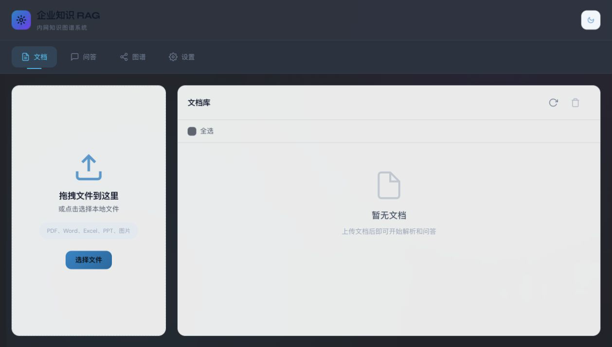

全文搜索很难回答“谁在何时批准了什么”
在半导体、金融、医疗等强合规场景，文档可能保存 7–10 年。关键信息常藏在扫描件、表格和跨文档关系里，查询对象是实体、决策人与变更链，而不只是关键词。
Enterprise AI Case Study · 重点案例
一个面向强合规行业与长期知识资产的企业文档智能阅读系统。它以 LightRAG / RAGAnything 为底座，把 PDF、Word、Excel、PPT 与图片解析为可检索内容，并用 closed schema、关系置信度和可复现评测约束知识图谱抽取。

在半导体、金融、医疗等强合规场景，文档可能保存 7–10 年。关键信息常藏在扫描件、表格和跨文档关系里，查询对象是实体、决策人与变更链，而不只是关键词。
保留 LightRAG / RAGAnything 的检索能力，在上游薄弱处增加多格式 parser 路由、closed schema 实体关系抽取、JSON 修复、类型漂移统计、关系置信度和 Sidecar 质量报告。
支持 PDF、Word、Excel、PPT 与图片；上传后创建后台任务，文档状态与任务状态通过 V1 API 查询。
实体和关系类型进入 Pydantic 模型；未知类型映射并记录 drift，不让模型自由扩张生产 Schema。
对 JSON 解析、Schema 校验、实体去重、无效关系、类型漂移、耗时与关系置信度输出可复查指标。
开发模式使用本地存储；集成路径可切换 Qdrant + Neo4j，并在启动时检查依赖健康、失败时返回 503。
mix、local、global、hybrid 与 naive 覆盖局部片段、全局关系和 baseline 对照。
提供文档、任务、问答、流式问答、图谱导出和健康检查 API；前端用 vis.js 展示实体关系。
API Key 保护上传入口，保存文档记录并创建异步处理任务。
按文件类型路由解析，多模态内容交给本地视觉模型理解。
Chunk 进入 closed schema 抽取，修复 JSON、规范实体并评分关系。
向量与图谱分别进入本地后端或 Qdrant / Neo4j。
按问题选择局部、全局、混合或 baseline 路径并生成回答。
仓库把 corpus、来源、许可证、语言、词数、SHA-256 和验证脚本一起提交，避免用无法重建的私有数据证明效果。
120 篇 PURE SRS、47 篇 GitHub PRD / Spec、33 篇公开技术博客；其中英文 163 篇、中文 37 篇。
包含 103 PDF、44 XLSX、44 CSV，以及 DOC、DOCX、XLS、HTML；覆盖流程制度、技术手册、扫描图示、表格台账和 API 配置。
跨文档实体溯源、决策人与变更链是图谱优势；对于文档短命、迭代极快的场景，维护图谱的 ROI 可能不足。
强合规场景更重视可审计、可比较和可治理。类型漂移被映射与计数，而不是悄悄成为新的生产类型。
解析路由、Schema 抽取、置信度与质量 Sidecar 是差异化增量；底层检索继续复用 LightRAG / RAGAnything。
本次案例整理实际运行了健康 API、文档 Sidecar、LightRAG wrapper 与公开数据集校验相关测试，共 27 项通过；完整单元测试不依赖外部 Qdrant / Neo4j。
cp env.example .env cd backend python -m pytest python -m uvicorn app.main:app --port 8000 # 可选集成后端 docker compose up -d qdrant neo4j python -m pytest -m integration